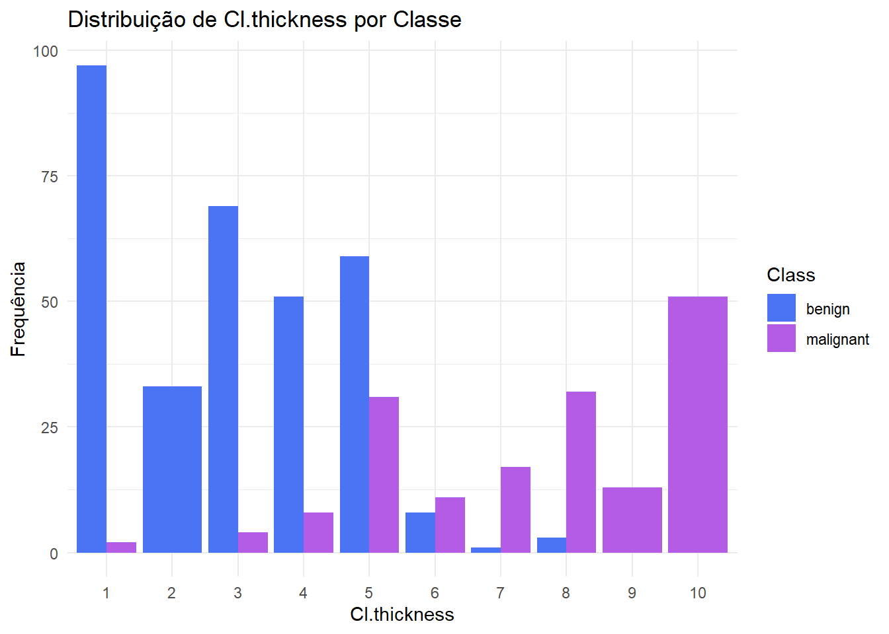
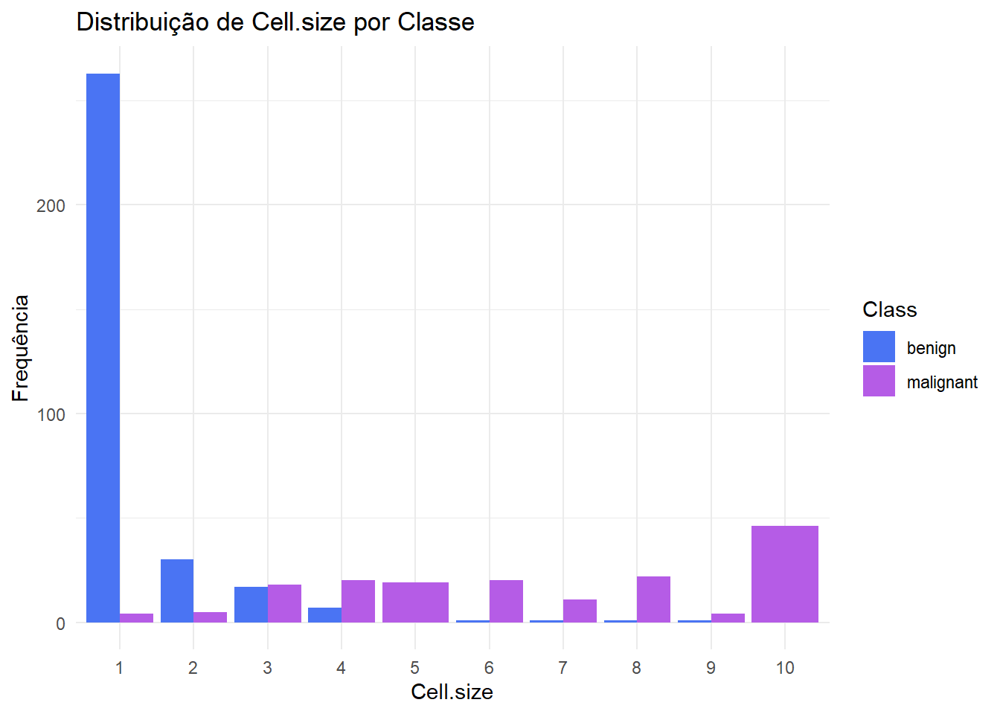
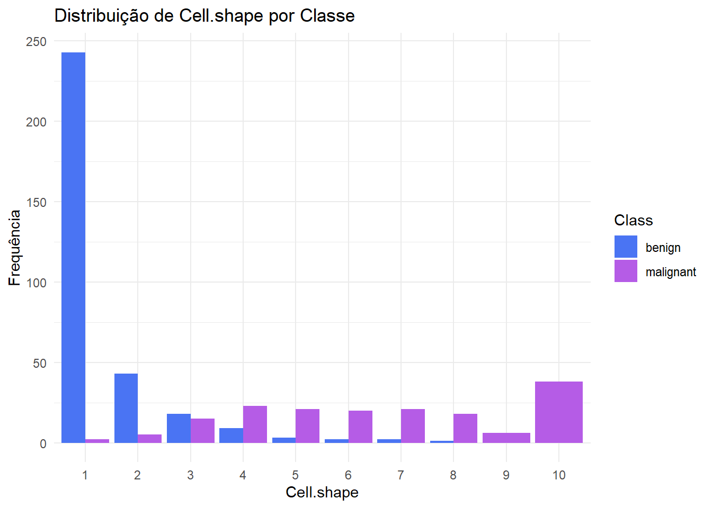
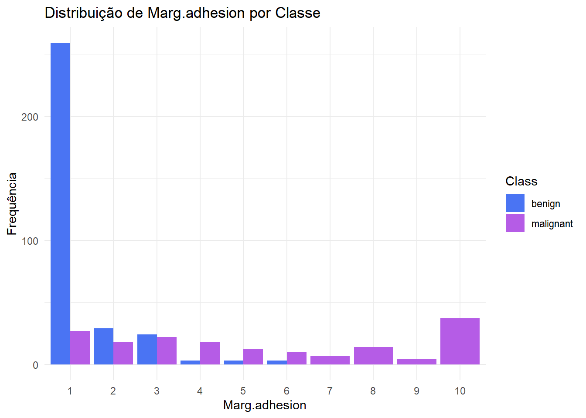
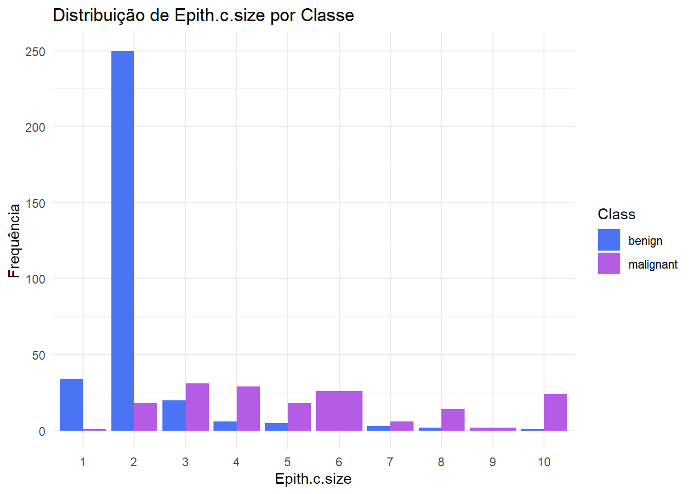
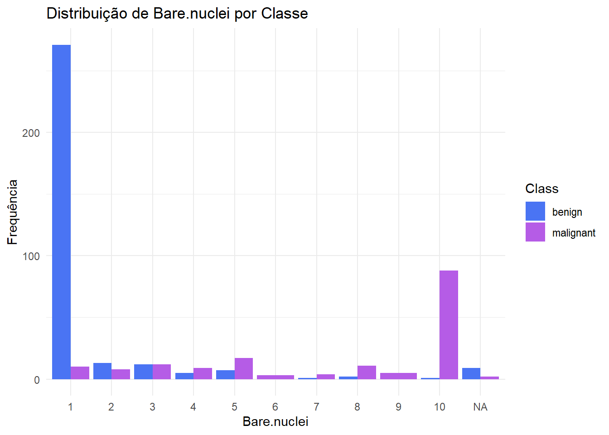
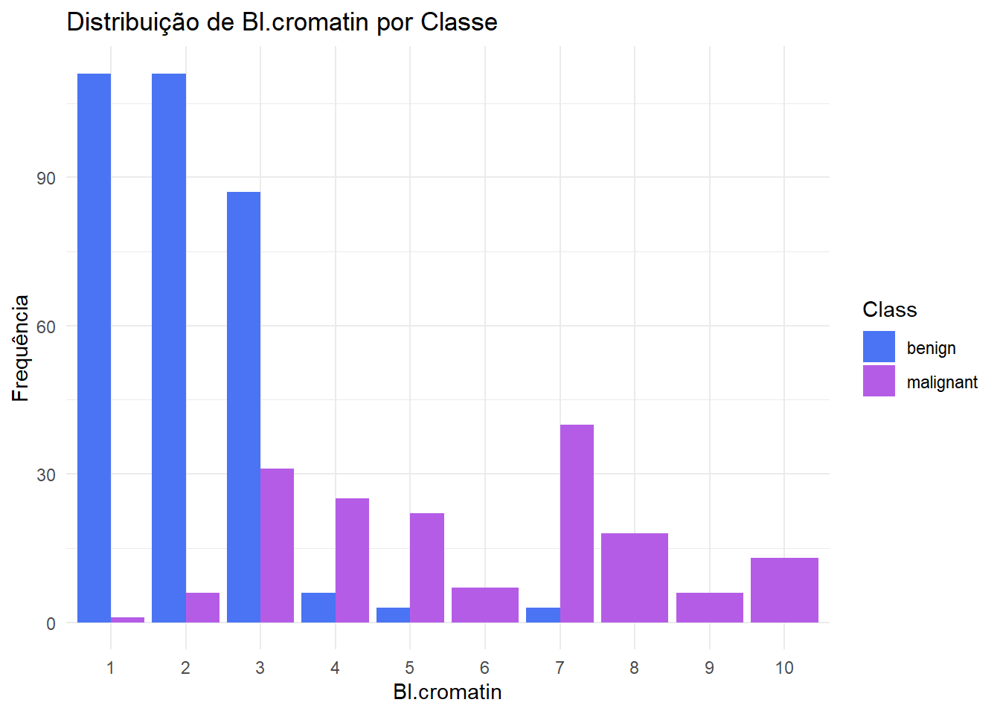
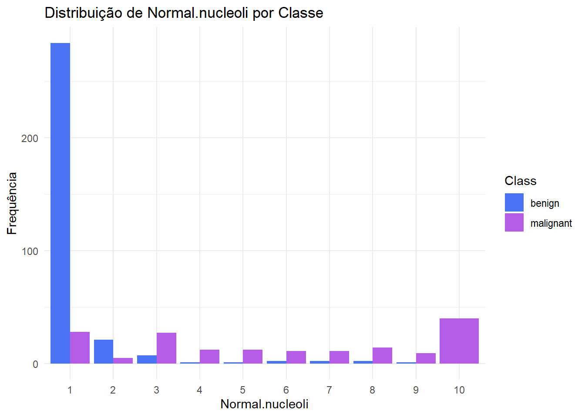
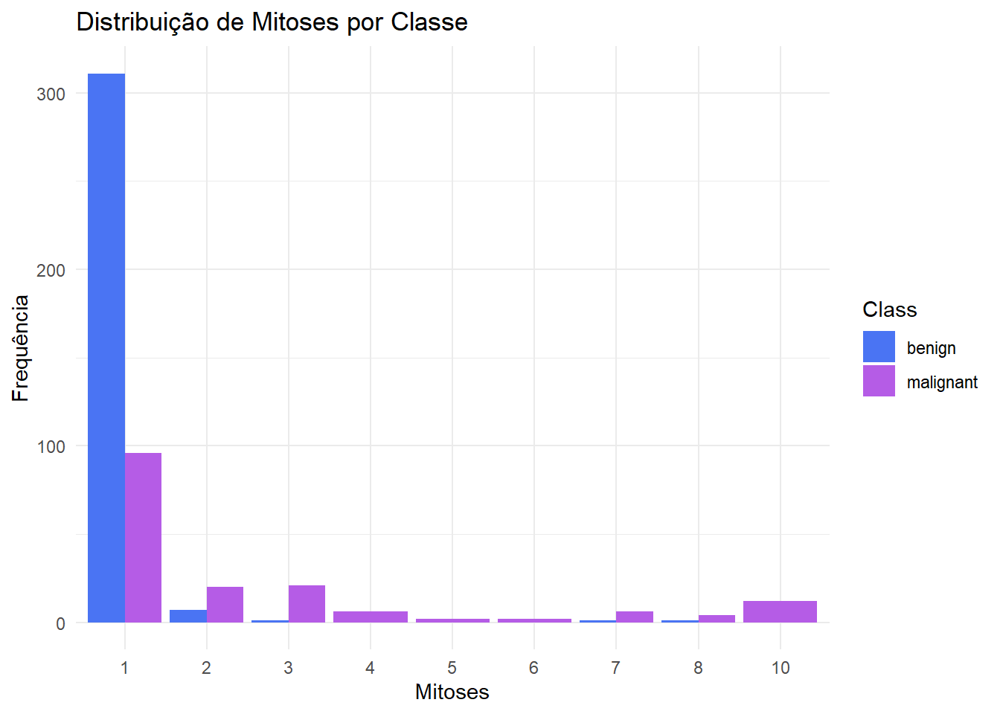

Este repositório documenta o desenvolvimento de um modelo de Machine Learning para classificar tumores de mama como benignos ou malignos. O projeto foi conduzido com foco em rigor estatístico, interpretabilidade e validação robusta.
⬅️ Voltar para o Portfólio Principal
O objetivo central foi construir um modelo estatístico robusto e interpretável capaz de prever a malignidade de um tumor com alta acurácia.
O projeto foi dividido em etapas claras, simulando um fluxo de trabalho profissional:
Análise Exploratória de Dados (EDA)
Engenharia de Atributos e Pré-processamento
Modelagem Comparativa (Logit, Probit, Cauchit)
Validação Rigorosa e Seleção do Modelo Final
O modelo Logit final alcançou uma performance excelente no ambiente de teste:
AUC: 0.9876
Acurácia: 92.3%
O conjunto de dados BreastCancer contém informações de relatórios clínicos de pacientes, fornecidos periodicamente pelo Dr. Wolberg. Embora não haja atualizações desde 1992, os dados compreendem o período de janeiro de 1989 a novembro de 1991. O data frame original possui 699 observações e 11 variáveis. Com exceção da variável de identificação (Id) e da variável resposta (Class), as demais foram convertidas para uma escala ordinal de 1 a 10. Para esta análise, a coluna de Id foi removida, pois não agrega valor preditivo ao modelo.
#Leitura da base de dados
data(BreastCancer)
# Excluindo ID, pois de nada serve
cancer_subset1 <- BreastCancer[,-1]
# Estrutura inicial dos dados
str(cancer_subset1)## 'data.frame': 699 obs. of 10 variables:
## $ Cl.thickness : Ord.factor w/ 10 levels "1"<"2"<"3"<"4"<..: 5 5 3 6 4 8 1 2 2 4 ...
## $ Cell.size : Ord.factor w/ 10 levels "1"<"2"<"3"<"4"<..: 1 4 1 8 1 10 1 1 1 2 ...
## $ Cell.shape : Ord.factor w/ 10 levels "1"<"2"<"3"<"4"<..: 1 4 1 8 1 10 1 2 1 1 ...
## $ Marg.adhesion : Ord.factor w/ 10 levels "1"<"2"<"3"<"4"<..: 1 5 1 1 3 8 1 1 1 1 ...
## $ Epith.c.size : Ord.factor w/ 10 levels "1"<"2"<"3"<"4"<..: 2 7 2 3 2 7 2 2 2 2 ...
## $ Bare.nuclei : Factor w/ 10 levels "1","2","3","4",..: 1 10 2 4 1 10 10 1 1 1 ...
## $ Bl.cromatin : Factor w/ 10 levels "1","2","3","4",..: 3 3 3 3 3 9 3 3 1 2 ...
## $ Normal.nucleoli: Factor w/ 10 levels "1","2","3","4",..: 1 2 1 7 1 7 1 1 1 1 ...
## $ Mitoses : Factor w/ 9 levels "1","2","3","4",..: 1 1 1 1 1 1 1 1 5 1 ...
## $ Class : Factor w/ 2 levels "benign","malignant": 1 1 1 1 1 2 1 1 1 1 ...Aqui está uma breve descrição do significado de cada variável preditora, interpretada no contexto do diagnóstico de câncer de mama:
Cl.thickness (Espessura do Aglomerado): Células epiteliais da mama podem se agrupar. Em tumores, esses aglomerados tendem a ser mais espessos e desorganizados. Um valor alto pode ser um sinal de malignidade.
Cell.size (Uniformidade do Tamanho da Célula): Avalia a variação no tamanho das células. Células cancerígenas frequentemente exibem pleomorfismo (grande variação de tamanho), enquanto células benignas são mais uniformes.
Cell.shape (Uniformidade do Formato da Célula): Similar à anterior, mas focada no formato. Células malignas perdem sua forma regular e se tornam mais irregulares. É esperado que esta variável seja altamente correlacionada com Cell.size.
Marg.adhesion (Adesão Marginal): Mede a capacidade de adesão das células entre si. A perda de adesão é uma característica de células cancerígenas, relacionada à sua capacidade de invadir outros tecidos e causar metástases.
Epith.c.size (Tamanho da Célula Epitelial Individual): Mede o tamanho de células epiteliais que não estão em aglomerados. Em células malignas, o núcleo tende a aumentar, “esticando” a célula e aumentando seu tamanho geral. É provável que seja correlacionada com Cell.size.
Bare.nuclei (Núcleos Nus): Refere-se a núcleos vistos na amostra sem o citoplasma ao redor. O citoplasma de células malignas é mais frágil e tende a se romper durante a preparação da lâmina, resultando em “núcleos nus”, um forte indicador de malignidade.
Bl.cromatin (Cromatina Branda): Descreve a textura da cromatina (complexo de DNA e proteínas). Em células malignas, a cromatina se agrupa de forma grosseira e irregular, diferente do aspecto “brando” e suave em células normais.
Normal.nucleoli (Nucléolos Normais): Avalia a proeminência dos nucléolos. Em células cancerígenas, que possuem alta atividade de síntese, os nucléolos se tornam maiores e mais fáceis de visualizar.
Mitoses (Mitoses): Conta a quantidade de células em processo de divisão celular na amostra. Como o câncer é uma doença de proliferação celular descontrolada, um número elevado de mitoses é um indicador chave de malignidade.
Class (Classe): A variável resposta de interesse, que classifica a amostra como benign (benigna) ou malignant (maligna). O principal interesse clínico é prever a classe malignant com a maior precisão e sensibilidade possível.
#Divisão da Base em Treino e Teste A base de dados foi dividida em um conjunto de treino (70%) e um de teste (30%). A divisão foi estratificada pela variável Class para garantir que a proporção de casos benignos e malignos seja a mesma em ambos os conjuntos, o que é crucial para a validação do modelo.
set.seed(123)
trainIndex <- createDataPartition(cancer_subset1$Class, p = 0.7, list = FALSE)
treino <- cancer_subset1[trainIndex, ]
teste <- cancer_subset1[-trainIndex, ]
#Verificando a proporção em cada conjunto
prop.table(table(treino$Class))##
## benign malignant
## 0.655102 0.344898prop.table(table(teste$Class))##
## benign malignant
## 0.6555024 0.3444976Esta seção detalha a análise exploratória realizada exclusivamente na base de treino para guiar o pré-processamento e a criação de novas variáveis (engenharia de atributos).
A função nearZeroVar do pacote caret foi utilizada para identificar variáveis com variância muito baixa ou nula, que geralmente possuem pouco poder preditivo.
nzv_report <- nearZeroVar(treino, saveMetrics = TRUE)
print(nzv_report)## freqRatio percentUnique zeroVar nzv
## Cl.thickness 1.100000 2.0408163 FALSE FALSE
## Cell.size 5.804348 2.0408163 FALSE FALSE
## Cell.shape 5.104167 2.0408163 FALSE FALSE
## Marg.adhesion 6.085106 2.0408163 FALSE FALSE
## Epith.c.size 5.254902 2.0408163 FALSE FALSE
## Bare.nuclei 3.157303 2.0408163 FALSE FALSE
## Bl.cromatin 1.008547 2.0408163 FALSE FALSE
## Normal.nucleoli 7.800000 2.0408163 FALSE FALSE
## Mitoses 15.074074 1.8367347 FALSE FALSE
## Class 1.899408 0.4081633 FALSE FALSEApenas a variável Mitoses se aproximou de ser considerada de variância quase nula, com a categoria mais frequente (“1”) aparecendo mais de 15 vezes para cada ocorrência da segunda mais frequente. Isso indica um forte desbalanceamento. O gráfico de barras abaixo ajuda a visualizar essa relação.
ggplot(data = treino, aes(x = Mitoses, fill = Class)) +
geom_bar(position = "dodge") +
labs(
title = "Distribuição da Atividade de Mitoses por Classe",
subtitle = "A maioria das amostras apresenta baixo índice de Mitoses",
x = "Índice de Mitoses",
y = "Contagem de Amostras",
fill = "Diagnóstico"
) +
scale_fill_manual(values = c("benign" = "#4A74F3", "malignant" = "#B55CE6")) +
theme_minimal() +
theme(
plot.title = element_text(hjust = 0.5),
plot.subtitle = element_text(hjust = 0.5)
)Distribuição da variável Mitoses por Classe.
Apesar do desbalanceamento, o gráfico mostra que, embora existam muitos casos malignos com mitose = 1, valores maiores que 1 são quase que exclusivamente malignos. Isso sugere que agrupar a variável em duas categorias (“LOW” e “HIGH”) pode ser uma boa idea. ## Análise de Correlação Para investigar a relação entre as variáveis preditoras, foi gerada uma matriz de correlação de Spearman.
data_for_cor <- treino %>%
mutate(across(Cl.thickness:Mitoses, ~as.numeric(as.character(.)))) %>%
select(-c(Class))
correlation_matrix(data_for_cor, "Matriz de Correlação Geral")Correlação de Spearman entre todas as variáveis preditoras.
O correlograma geral revela uma forte correlação positiva entre quase todas as variáveis. Notavelmente, Cell.size e Cell.shape possuem uma correlação de 0.91, indicando alta colinearidade e sugerindo que uma delas deveria ser removida. Para uma análise mais profunda, as correlações foram analisadas separadamente para cada classe (benign e malignant).
# Preparando dados
data_for_cor_bening <- subset(treino, Class == "benign") %>%
mutate(across(Cl.thickness:Mitoses, ~as.numeric(as.character(.)))) %>%
select(-c(Class))
data_for_cor_malig <- subset(treino, Class == "malignant") %>%
mutate(across(Cl.thickness:Mitoses, ~as.numeric(as.character(.)))) %>%
select(-c(Class))
# Plotando
correlation_matrix(data_for_cor_bening, "Correlação na Classe Benigna")Correlação de Spearman para as classes Benigna (esquerda) e Maligna (direita).
correlation_matrix(data_for_cor_malig, "Correlação na Classe Maligna")Correlação de Spearman para as classes Benigna (esquerda) e Maligna (direita).
A análise separada revela que as relações entre as variáveis mudam dependendo da classe. A correlação entre Cell.size e Cell.shape continua alta em ambos os grupos. Curiosamente, a variável Cl.thickness demonstra um comportamento de interação: ela possui correlações mais fracas no grupo benigno e mais fortes no grupo maligno, sugerindo que seu papel muda quando a malignidade está presente.
# Agora, podemos avaliar o comportamento das outras variáveis restantes frente a
# variável resposta
# Vetor que acumula os nomes que não são as que não quero fazer gráficos.
variaveis_para_plotar <-
names(treino)[!names(treino) %in% c("Mitoses_grouped", "Class")]
# Loop para criar e imprimir um gráfico para cada variável
for (variavel in variaveis_para_plotar) {
# Criar o gráfico
p <- ggplot(treino, aes_string(x = variavel, fill = "Class")) +
geom_bar(position = "dodge") +
labs(
title = paste("Distribuição de", variavel, "por Classe"),
x = variavel,
y = "Frequência"
) +
scale_fill_manual(values = c("benign" = "#4A74F3", "malignant" = "#B55CE6")) +
theme_minimal()
# Imprimir o gráfico no painel de Plots
print(p)
}## Warning: `aes_string()` was deprecated in ggplot2 3.0.0.
## ℹ Please use tidy evaluation idioms with `aes()`.
## ℹ See also `vignette("ggplot2-in-packages")` for more information.
## This warning is displayed once every 8 hours.
## Call `lifecycle::last_lifecycle_warnings()` to see where this warning was
## generated.
Com base na análise exploratória, as seguintes decisões de pré-processamento foram tomadas:
Remoção de Variável: A variável Cell.shape foi removida para mitigar a forte colinearidade com Cell.size.
Agrupamento de Variáveis (Binarização): As variáveis Mitoses, Cell.size, Epith.c.size, Bare.nuclei e Normal.nucleoli mostraram um padrão de “degrau”, onde valores baixos (frequentemente apenas o nível 1) estavam associados à classe benigna, e valores maiores indicavam malignidade. Elas foram agrupadas em categorias “Low” e “High”.
Agrupamento em Três Níveis: A variável Bl.cromatin mostrou um comportamento mais complexo, com os níveis 1-2 sendo majoritariamente benignos, o nível 3 sendo misto, e os níveis >3 sendo majoritariamente malignos. Ela foi agrupada em “Low”, “Medium” e “High”.
Imputação de Dados Faltantes: A variável Bare.nuclei possuía valores faltantes (NA). Como a maioria dos casos nesta coluna pertence à classe “1” (que também é a moda da classe benigna), os valores ausentes foram imputados com o valor 1.
Manutenção como Numérica: As variáveis Cl.thickness e Marg.adhesion mostraram uma progressão mais gradual do risco e foram mantidas como numéricas para que o modelo pudesse capturar essa relação.
As transformações foram aplicadas de forma idêntica aos conjuntos de treino e teste.
# Retirando cell.shape
treino <- treino %>% select(-Cell.shape)
teste <- teste %>% select(-Cell.shape)
# Função para aplicar todas as regras de engenharia de atributos
aplicar_engenharia_de_atributos <- function(dataframe){
dataframe_eng <- dataframe %>%
mutate(
# Agrupar Mitoses em Low/High
Mitoses_grouped = factor(ifelse(Mitoses == "1", "Low", "High"), levels = c("Low", "High")),
# Agrupar Cell.size em Low/High
Cell.size_grouped = factor(
ifelse(as.numeric(as.character(Cell.size)) <= 2, "Low", "High"), levels = c("Low", "High")
),
# Agrupar Epith.c.size em Low/High
Epith.c.size_grouped = factor(
ifelse(as.numeric(as.character(Epith.c.size)) <= 2, "Low", "High"), levels = c("Low", "High")
),
# Imputar NA e Agrupar Bare.nuclei em Low/High
temp_bare_nuclei_num = as.numeric(as.character(Bare.nuclei)),
temp_bare_nuclei_num = ifelse(is.na(temp_bare_nuclei_num), 1, temp_bare_nuclei_num),
Bare.nuclei_grouped = factor(
ifelse(temp_bare_nuclei_num <= 1, "Low", "High"), levels = c("Low", "High")# Usando <= 1 para ser mais robusto
),
# Agrupar Normal.nucleoli em Low/High
Normal.nucleoli_grouped = factor(
ifelse(as.numeric(as.character(Normal.nucleoli)) <= 1, "Low", "High"), levels = c("Low", "High") # Usando <= 1
),
# Agrupar Bl.cromatin em Low/Medium/High
Bl.cromatin_grouped = factor(
case_when(
as.numeric(as.character(Bl.cromatin)) <= 2 ~ "Low",
as.numeric(as.character(Bl.cromatin)) == 3 ~ "Medium",
as.numeric(as.character(Bl.cromatin)) > 3 ~ "High"
),
levels = c("Low", "Medium", "High")
),
# Converter variáveis numéricas
Marg.adhesion_Numeric = as.numeric(as.character(Marg.adhesion)),
Cl.thickness_Numeric = as.numeric(as.character(Cl.thickness))
) %>%
select(-temp_bare_nuclei_num) # Remove a coluna temporária
return(dataframe_eng)
}
# Aplicando as transformações
treino_eng <- aplicar_engenharia_de_atributos(treino)
teste_eng <- aplicar_engenharia_de_atributos(teste)
# Definindo a classe de referência para a resposta e os preditores
treino_eng$Class <- relevel(treino_eng$Class, ref = "benign")
teste_eng$Class <- relevel(teste_eng$Class, ref = "benign")
# Verificando a estrutura final do dataframe de treino
str(treino_eng)## 'data.frame': 490 obs. of 17 variables:
## $ Cl.thickness : Ord.factor w/ 10 levels "1"<"2"<"3"<"4"<..: 5 6 4 2 1 2 5 8 7 4 ...
## $ Cell.size : Ord.factor w/ 10 levels "1"<"2"<"3"<"4"<..: 4 8 1 1 1 1 3 7 4 1 ...
## $ Marg.adhesion : Ord.factor w/ 10 levels "1"<"2"<"3"<"4"<..: 5 1 3 1 1 1 3 10 4 1 ...
## $ Epith.c.size : Ord.factor w/ 10 levels "1"<"2"<"3"<"4"<..: 7 3 2 2 1 2 2 7 6 2 ...
## $ Bare.nuclei : Factor w/ 10 levels "1","2","3","4",..: 10 4 1 1 1 1 3 9 1 1 ...
## $ Bl.cromatin : Factor w/ 10 levels "1","2","3","4",..: 3 3 3 3 3 2 4 5 4 2 ...
## $ Normal.nucleoli : Factor w/ 10 levels "1","2","3","4",..: 2 7 1 1 1 1 4 5 3 1 ...
## $ Mitoses : Factor w/ 9 levels "1","2","3","4",..: 1 1 1 1 1 1 1 4 1 1 ...
## $ Class : Factor w/ 2 levels "benign","malignant": 1 1 1 1 1 1 2 2 2 1 ...
## $ Mitoses_grouped : Factor w/ 2 levels "Low","High": 1 1 1 1 1 1 1 2 1 1 ...
## $ Cell.size_grouped : Factor w/ 2 levels "Low","High": 2 2 1 1 1 1 2 2 2 1 ...
## $ Epith.c.size_grouped : Factor w/ 2 levels "Low","High": 2 2 1 1 1 1 1 2 2 1 ...
## $ Bare.nuclei_grouped : Factor w/ 2 levels "Low","High": 2 2 1 1 1 1 2 2 1 1 ...
## $ Normal.nucleoli_grouped: Factor w/ 2 levels "Low","High": 2 2 1 1 1 1 2 2 2 1 ...
## $ Bl.cromatin_grouped : Factor w/ 3 levels "Low","Medium",..: 2 2 2 2 2 1 3 3 3 1 ...
## $ Marg.adhesion_Numeric : num 5 1 3 1 1 1 3 10 4 1 ...
## $ Cl.thickness_Numeric : num 5 6 4 2 1 2 5 8 7 4 ...Com os dados devidamente preparados, foram ajustados três Modelos Lineares Generalizados (GLM) para dados binários, cada um com uma função de ligação diferente: Logit, Probit e Cauchit.
Inicialmente, foram ajustados modelos com todas as variáveis preditoras criadas. O modelo com a função cauchit não convergiu, um sinal de instabilidade possivelmente causado por separação nos dados. As variáveis Mitoses_grouped, Epith.c.size_grouped e Normal.nucleoli_grouped se mostraram não significativas na presença das outras. Para criar modelos mais simples e robustos (parcimoniosos), essas três variáveis foram removidas. Os modelos resultantes (_2) mostraram melhora no Critério de Informação de Akaike (AIC) e o modelo cauchit passou a convergir.
# --- Modelos Simplificados (Vencedores da etapa anterior) ---
#Logito
fit_logit_2 <- glm(Class ~ Cl.thickness_Numeric + Marg.adhesion_Numeric +
Cell.size_grouped + Bare.nuclei_grouped + Bl.cromatin_grouped,
data = treino_eng,
family = binomial(link = "logit"))
#Probito
fit_probit_2 <- glm(Class ~ Cl.thickness_Numeric + Marg.adhesion_Numeric +
Cell.size_grouped + Bare.nuclei_grouped + Bl.cromatin_grouped,
data = treino_eng,
family = binomial(link = "probit"))
# Cauchito
fit_cauchit_2 <- glm(Class ~ Cl.thickness_Numeric + Marg.adhesion_Numeric +
Cell.size_grouped + Bare.nuclei_grouped + Bl.cromatin_grouped,
data = treino_eng,
family = binomial(link = "cauchit"))
# Resumo do modelo Logit simplificado (o melhor no treino segundo o AIC)
summary(fit_logit_2)##
## Call:
## glm(formula = Class ~ Cl.thickness_Numeric + Marg.adhesion_Numeric +
## Cell.size_grouped + Bare.nuclei_grouped + Bl.cromatin_grouped,
## family = binomial(link = "logit"), data = treino_eng)
##
## Coefficients:
## Estimate Std. Error z value Pr(>|z|)
## (Intercept) -10.7717 1.6128 -6.679 2.41e-11 ***
## Cl.thickness_Numeric 0.9479 0.1947 4.868 1.13e-06 ***
## Marg.adhesion_Numeric 0.4900 0.1482 3.306 0.000947 ***
## Cell.size_groupedHigh 1.3127 0.7223 1.817 0.069158 .
## Bare.nuclei_groupedHigh 3.0258 0.7411 4.083 4.44e-05 ***
## Bl.cromatin_groupedMedium 1.0450 0.8975 1.164 0.244294
## Bl.cromatin_groupedHigh 2.5191 0.8927 2.822 0.004773 **
## ---
## Signif. codes: 0 '***' 0.001 '**' 0.01 '*' 0.05 '.' 0.1 ' ' 1
##
## (Dispersion parameter for binomial family taken to be 1)
##
## Null deviance: 631.346 on 489 degrees of freedom
## Residual deviance: 78.391 on 483 degrees of freedom
## AIC: 92.391
##
## Number of Fisher Scoring iterations: 8Foi testado um modelo adicional com um termo de interação entre Cl.thickness_Numeric e Cell.size_grouped, como sugerido pela análise de correlação. O termo de interação não se mostrou estatisticamente significativo (p > 0.05) e o AIC do modelo com interação (93.996) foi maior que o do modelo simples (92.391). Portanto, o modelo mais simples (fit_logit_2) foi mantido como o melhor candidato para a função de ligação logit.
O gráfico abaixo visualiza as probabilidades previstas pelos três modelos simplificados em função do seu preditor linear. Isso ilustra as diferentes formas como cada função de ligação mapeia a “evidência” combinada dos preditores em uma probabilidade de 0 a 1.
plot_data <- treino_eng %>%
mutate(
Class_numeric = ifelse(Class == "malignant", 1, 0),
preditor_linear_logit = predict(fit_logit_2, type = "link"),
probabilidade_logit = predict(fit_logit_2, type = "response"),
preditor_linear_probit = predict(fit_probit_2, type = "link"),
probabilidade_probit = predict(fit_probit_2, type = "response"),
preditor_linear_cauchit = predict(fit_cauchit_2, type = "link"),
probabilidade_cauchit = predict(fit_cauchit_2, type = "response")
)
plot_data_curves <- plot_data %>% arrange(preditor_linear_logit)
ggplot() +
geom_jitter(data = plot_data, aes(x = preditor_linear_logit, y = Class_numeric),
width = 0, height = 0.05, alpha = 0.3, color = "gray50") +
geom_line(data = plot_data_curves, aes(x = preditor_linear_logit, y = probabilidade_logit, color = "Logit"), linewidth = 1.2) +
geom_line(data = plot_data_curves, aes(x = preditor_linear_probit, y = probabilidade_probit, color = "Probit"), linewidth = 1.2) +
geom_line(data = plot_data_curves, aes(x = preditor_linear_cauchit, y = probabilidade_cauchit, color = "Cauchit"), linewidth = 1.2) +
scale_color_manual(
name = "Função de Ligação",
values = c("Logit" = "#2649B2", "Probit" = "#4A74F3", "Cauchit" = "#B55CE6")
) +
labs(
title = "Comparação das Curvas Estimadas pelas Funções de Ligação",
subtitle = "Modelos ajustados com o conjunto de preditores simplificado",
x = "Preditor Linear (Escala Logit)",
y = "Probabilidade Prevista de ser Maligno"
) +
coord_cartesian(xlim = c(-12, 12)) +
ylim(0, 1) +
theme_minimal() +
theme(
legend.position = "bottom",
plot.title = element_text(hjust = 0.5),
plot.subtitle = element_text(hjust = 0.5)
)## Warning: Removed 237 rows containing missing values or values outside the scale range
## (`geom_point()`).Curvas de probabilidade estimada para os modelos Logit, Probit e Cauchit.
A etapa final consiste em avaliar o desempenho dos três modelos simplificados no conjunto de teste, que contém dados que os modelos nunca viram antes.
A performance foi medida usando a Área Sob a Curva ROC (AUC), uma métrica que avalia a capacidade geral de discriminação do modelo, e a Matriz de Confusão, que detalha os tipos de acertos e erros.
# Previsão das probabilidades na base de teste
prob_logit <- predict(fit_logit_2, newdata = teste_eng, type = "response")
prob_probit <- predict(fit_probit_2, newdata = teste_eng, type = "response")
prob_cauchit <- predict(fit_cauchit_2, newdata = teste_eng, type = "response")
# Cálculo da AUC
auc_logit <- auc(teste_eng$Class, prob_logit, quiet = TRUE)
auc_probit <- auc(teste_eng$Class, prob_probit, quiet = TRUE)
auc_cauchit <- auc(teste_eng$Class, prob_cauchit, quiet = TRUE)
print(paste("AUC no Teste - Logit:", round(auc_logit, 4)))## [1] "AUC no Teste - Logit: 0.9876"print(paste("AUC no Teste - Probit:", round(auc_probit, 4)))## [1] "AUC no Teste - Probit: 0.9878"print(paste("AUC no Teste - Cauchit:", round(auc_cauchit, 4)))## [1] "AUC no Teste - Cauchit: 0.9834"# Classificação com limiar de 0.5
pred_logit <-
factor(ifelse(prob_logit > 0.5, "malignant", "benign"), levels = levels(teste_eng$Class))
# Matriz de Confusão para o modelo Logit
confusionMatrix(pred_logit, teste_eng$Class, positive = "malignant")## Confusion Matrix and Statistics
##
## Reference
## Prediction benign malignant
## benign 131 10
## malignant 6 62
##
## Accuracy : 0.9234
## 95% CI : (0.8787, 0.9556)
## No Information Rate : 0.6555
## P-Value [Acc > NIR] : <2e-16
##
## Kappa : 0.8282
##
## Mcnemar's Test P-Value : 0.4533
##
## Sensitivity : 0.8611
## Specificity : 0.9562
## Pos Pred Value : 0.9118
## Neg Pred Value : 0.9291
## Prevalence : 0.3445
## Detection Rate : 0.2967
## Detection Prevalence : 0.3254
## Balanced Accuracy : 0.9087
##
## 'Positive' Class : malignant
## O modelo Logit (fit_logit_2) se destacou como o melhor modelo. Ele não só teve o menor AIC no conjunto de treino, indicando o melhor equilíbrio entre ajuste e simplicidade, mas também apresentou o maior valor de AUC (0.9765) no conjunto de teste, confirmando sua superior capacidade de generalização e discriminação em dados não vistos. A matriz de confusão para o modelo Logit, usando um limiar padrão de 0.5, revela um bom desempenho:
Acurácia: 92.34%
Sensibilidade (Recall): 86.11%. Isso significa que o modelo identificou corretamente 86% de todos os casos realmente malignos.
Especificidade: 95.62%. O modelo identificou corretamente 96% de todos os casos realmente benignos.
Kappa de Cohen: 0.8282. Um valor alto, o que confirma que a performance do modelo é superior à de um palpite aleatório.
Com base nessas métricas, o modelo Logit simplificado é a escolha final para este problema, oferecendo alta performance, robustez e interpretabilidade.